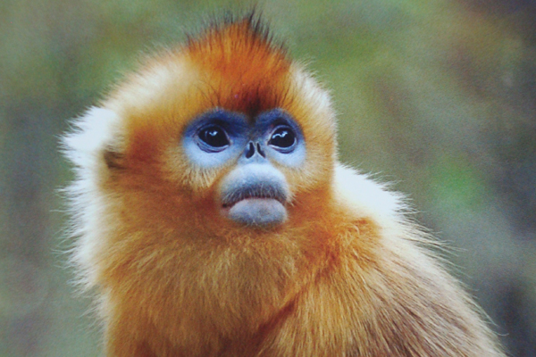
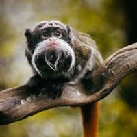
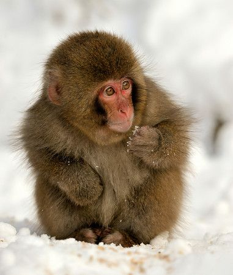
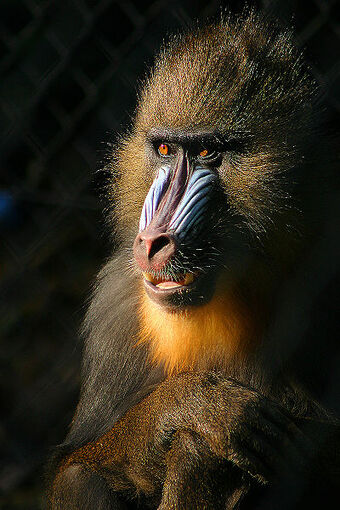
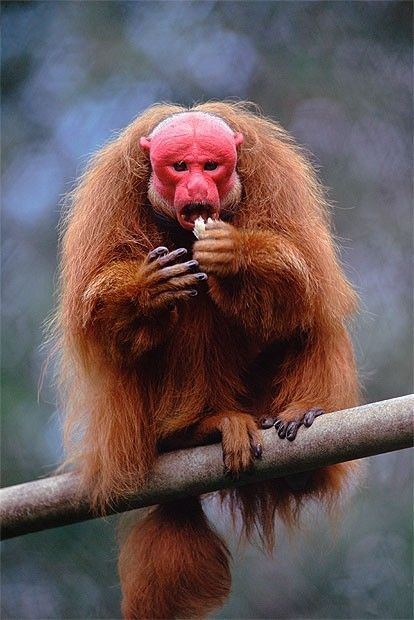

T3A03-webpage-Gabriel.html
Monkeys are really awesome!
Pictures: 
Links:MONKEY FACTS!
2. 2x2 Table
3. Lists
Ordered list: Favorite monkeys
- Snub nosed monkey
- Emperor tamarin monkey (mustache monkey)
- Japanese macaque
- Mandrill
- Bald uakari
Unordered List: Countrys with the most monkeys
- Brazil
- Madagascar
- Indonesia (most diverse species)
- Democratic Republic of the Congo
- China